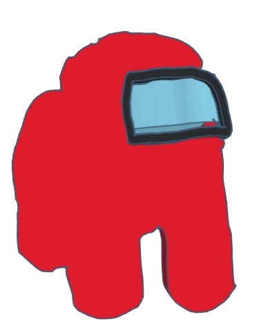

M
Y
W
E
B
S
I
T
E
Here are the other pages
About me
Academic Achievements
Extracurricular Activities
Hobbies and Interests
Favorites and Dislikes
Contacts
Game and models.
Questions, Suggestions and Rating

made by me in tinkercad
Your browser does not support the audio element.